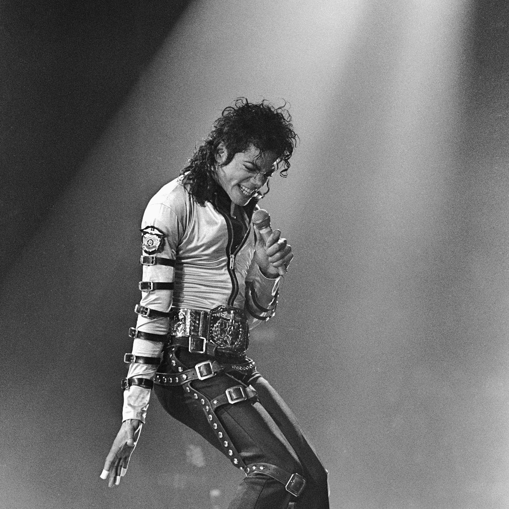
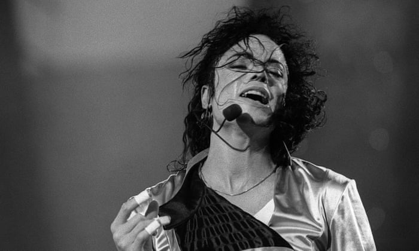
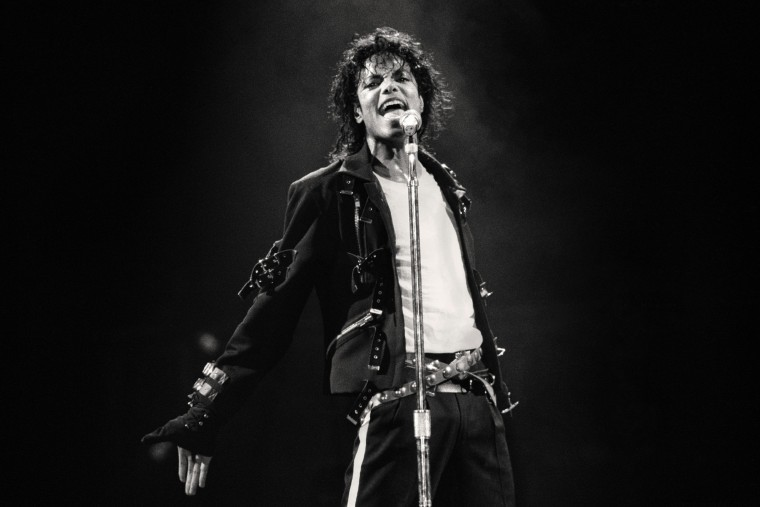
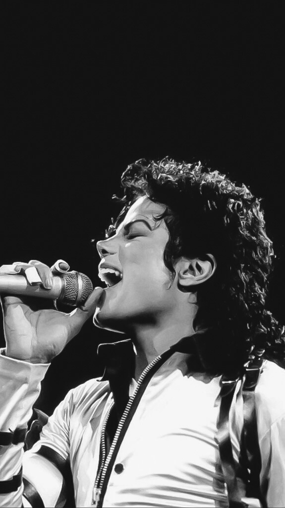
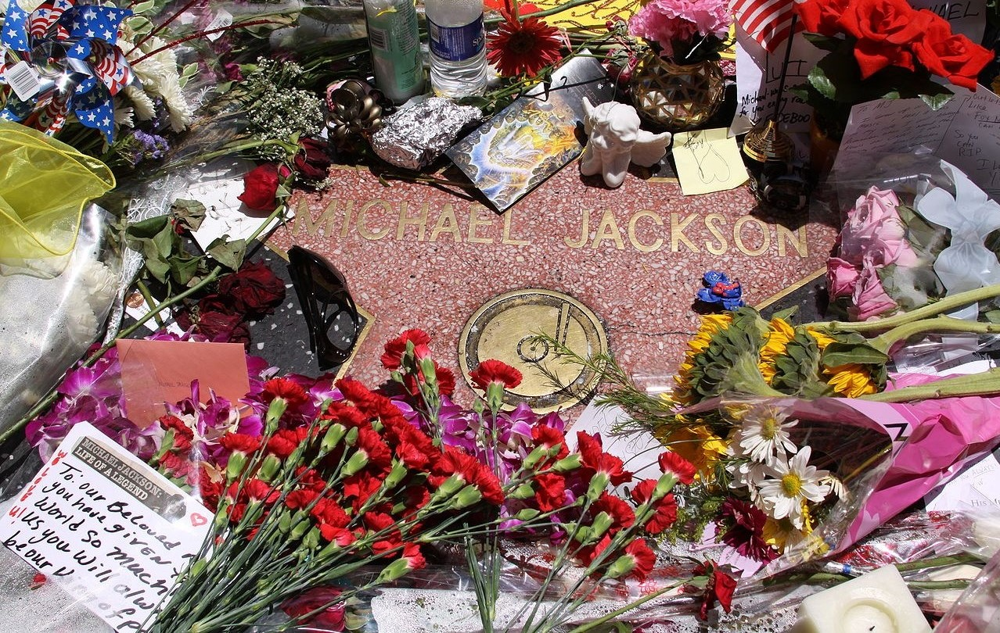
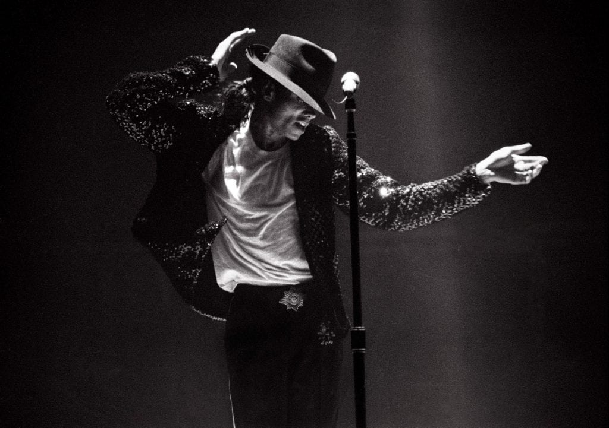
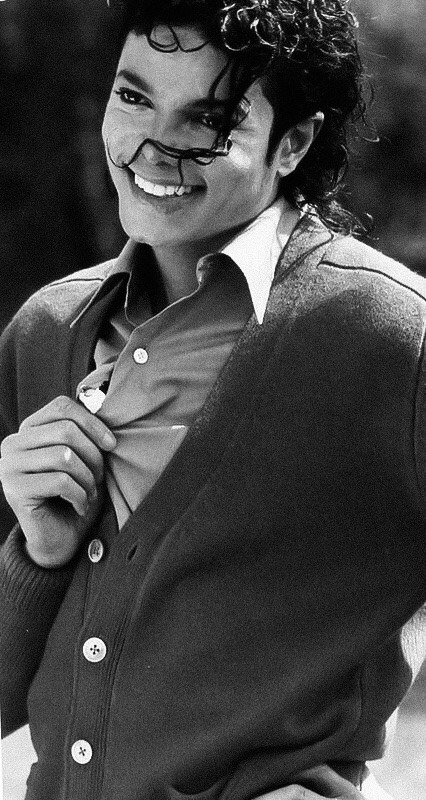
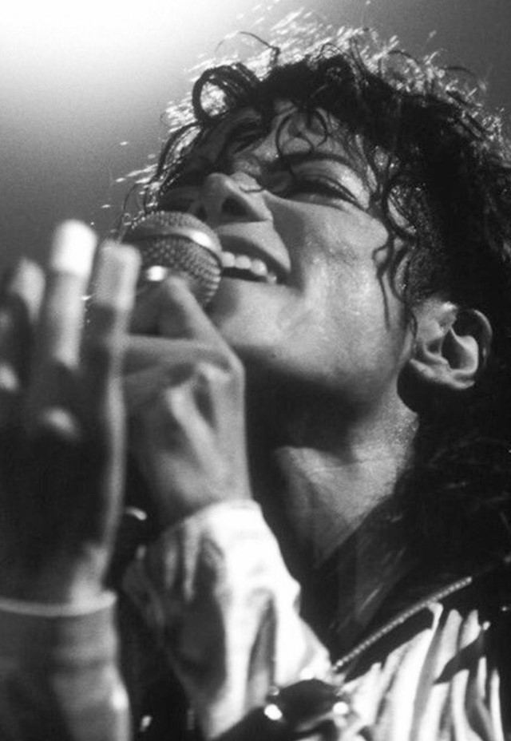

Michael Jackson
King of Pop








One of the Greatest Artists Ever.
Life and career of Michael Jackson
- 1958–1975: Early life and the Jackson 5
- 1975–1981: Move to Epic and Off the Wall
- 1982–1983: Thriller and Motown 25: Yesterday, Today, Forever
- 1984–1985: Pepsi, "We Are the World", and business career
- 1986–1987: Changing appearance, tabloids, and films
- 1987–1990: Bad, autobiography, and Neverland
- 1991–1993: Dangerous, Heal the World Foundation, and Super Bowl XXVII halftime show
- 1993–1995: First child sexual abuse accusations and first marriage
- 1995–1997: HIStory, second marriage, and fatherhood
- 1997–2002: Label dispute and Invincible
- 2002–2005: Second child sexual abuse allegations, trial, and acquittal
- 2006–2009: Final years and This Is It
Trying to trace Michael Jackson's influence on the pop stars that followed him is like trying to trace the influence of oxygen and gravity. So vast, far-reaching and was his impact — particularly in the wake of Thriller's colossal and heretofore unmatched commercial success — that there weren't a whole lot of artists who weren't trying to mimic some of the Jackson formula.— J. Edward Keyes
Learn more about Michael Jackson.